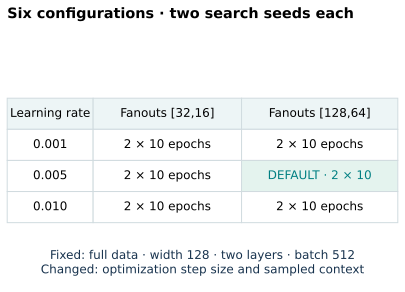
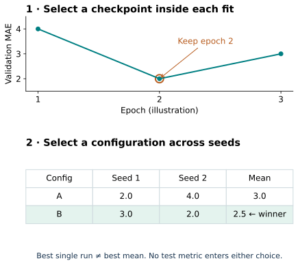
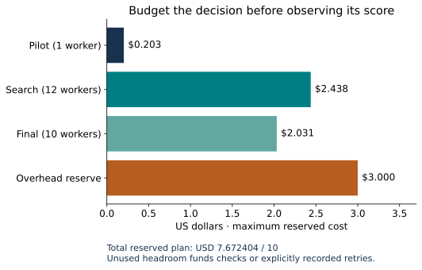
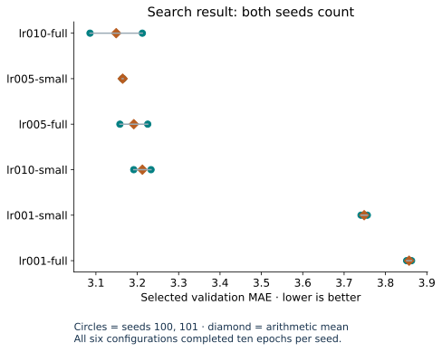
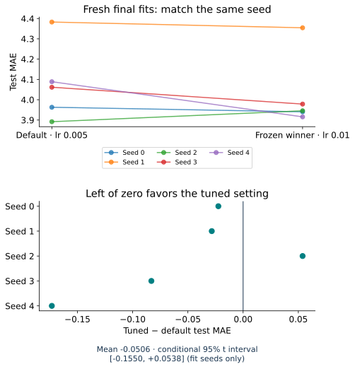

Year 4 · Quarter 2 · Lesson 135
Tuning on the REG: spend a budget, defend a decision
A better validation score is easy to buy: try more things. A defensible result begins by deciding how many things you are allowed to try.
Your win: freeze a relational search, select its winner without test information, and defend the paired result together with its cost.
Route: 5 minutes of retrieval → 15 minutes tracing selection → 20 minutes of live notebook work → 10 minutes writing your decision. Author benchmark execution is reference evidence; your explanation is the mastery test.
Student notebook · Executed solution · Solution notebook · Reference card · Exact reproduction commands
1 · From the cost of a batch to the cost of a decision¶
Lesson 134 measures which sampled rows reach the model and how much a step costs. That leaves a decision unresolved: how should we spend a finite budget choosing the model settings? A cheap configuration may permit more trials. A large fanout changes both the available context and the computation. Equal trial counts, epochs, GPU time and dollars are four different constraints.
Retrieve before reading: What identifies a temporal prediction besides its entity ID? Which split selects a checkpoint? Why does doubling the fanout not guarantee twice the peak GPU memory?
Check your retrieval
The query is (entity, cutoff). Validation selects the checkpoint; test evaluates a frozen decision. Relation paths, node degrees, time filtering, activations and allocator behavior determine actual memory, so a fanout multiplier alone is insufficient.The mission is to make relational-model evidence credible against strong tabular baselines. An undocumented search can give one method an advantage before the final metric is even calculated. This lesson trains you to make that advantage visible.
Read RelBench v1 Appendix B.2, Table 9 first. The authors used task-specific defaults rather than exhaustive tuning. We reproduce their basic RDL, rel-f1/driver-position, Table 7 lane and conduct a separately named course tuning study. Our search does not recreate an unpublished paper search.
2 · Freeze what can change—and what cannot¶
Our six configurations cross learning rates {0.001, 0.005, 0.01} with two fanout lists, [32,16] and [128,64]. Everything else stays fixed: full released graph and query tables, feature preparation, width 128, two layers, sum aggregation, batch size 512, Adam, ten epochs, mean L1 training loss and training-label percentile clipping at evaluation. Each configuration receives the same two search seeds, 100 and 101.
Why these knobs? The learning rate changes optimization. Fanout changes the sampled relational information and its cost. Changing both reveals a tuning problem without changing the architecture. This is a deliberately small, exhaustive grid with a fixed trial count and epoch allocation, inside an aggregate dollar cap. It does not equalize FLOPs or dollars across configurations.
On a narrow screen, scroll each diagram horizontally to retain readable labels.

The released code derives [128,64] from its base neighbor count, although the paper table lists 128 neighbors. Preserve the source behavior and record the distinction. The released preprocessing uses database rows up to the test cutoff, rather than training-only feature statistics; this is a reproduction choice, not proof of deployment-time validity. Pinned source
The complete stack remains visible in the notebook: typed rows → Frame encoders + relative-time encoders → two typed GraphSAGE layers → seed head → L1 loss. The new mechanism here is the experiment controller, not a new model.
3 · Two selection steps, one information boundary¶
Inside one trial, train for ten epochs and retain the first epoch with the lowest validation MAE. Across configurations, average those selected validation MAEs over both search seeds. The lowest mean wins; an exact tie uses the stable configuration ID. Do not select by the most fortunate individual seed.
For a worked illustration, configuration A has selected MAEs [2,4] and B has [3,2]. A owns the best single run, but B wins on the declared rule: 2.5 < 3.0. These numbers illustrate the rule; the measured F1 results appear later.

TODO 1: implement select_configuration. Require the exact Cartesian product of planned configurations and seeds. Reject missing, duplicate, unplanned or nonfinite results. Read only validation scores. The live search-freezing operator calls this function.
def select_configuration(rows, configurations, seeds):
"""Require the exact frozen search; rank validation means, then stable ID."""
if not configurations or not seeds or len(set(configurations))!=len(configurations) or len(set(seeds))!=len(seeds):
raise ValueError('Nonempty unique configuration and seed lists required')
expected={(c,s) for c in configurations for s in seeds}
values={}
for row in rows:
key=(row['config'],row['seed']);value=float(row['selection_mae'])
if key not in expected or key in values or not math.isfinite(value) or value<0:
raise ValueError('Unplanned, duplicate or invalid validation record')
values[key]=value
if set(values)!=expected:raise ValueError('Finish every planned trial before selecting')
ranking=sorted((dict(config=c,mean_validation_mae=statistics.mean(values[c,s] for s in seeds)) for c in configurations),key=lambda r:(r['mean_validation_mae'],r['config']))
return dict(winner=ranking[0]['config'],ranking=ranking,selection='mean of first-best validation checkpoint MAEs; stable ID tie-break')
The search worker never requests a test table or constructs a test loader; a guard raises if it tries. After all 12 complete fits, the controller writes a frozen winner containing hashes of the protocol and search artifacts. Final dispatch checks those hashes. A half-finished grid has no winner under this protocol: missing expensive trials cannot quietly disappear.
Checkpoint selection MAE and a later validation replay may differ slightly because temporal neighbors are sampled again. Rank the recorded selection metric specified in the protocol; do not switch to whichever replay number looks nicer.
4 · Reserve the worst case before launching¶
A dispatch has a cost before it has a result. If a worker can run for 900 seconds at $0.00022572/s, reserve **$0.203148 per worker**. Twelve search workers reserve $2.437776**. The pilot plus 12 search fits plus at most ten final fits reserve **$4.672404, leaving room for checks and the $3 overhead reserve under our $10 ceiling. Failed attempts still consume their reservations.

TODO 2: implement reserve_budget. Sum existing reservations, add all new workers at their time limit, and refuse the launch when this plus overhead exceeds the cap. Reject negative and nonfinite inputs. The author Modal operator calls this function before dispatching work.
def reserve_budget(prior_reservations, workers, timeout_seconds, rate, overhead, cap):
"""Reserve all workers at their maximum lifetime before starting any."""
vals=[*prior_reservations,timeout_seconds,rate,overhead,cap]
if any(not math.isfinite(float(x)) or x<0 for x in vals) or not isinstance(workers,int) or workers<=0 or timeout_seconds<=0 or rate<=0:
raise ValueError('Finite nonnegative costs and positive worker count/runtime required')
total=math.fsum(prior_reservations)+workers*timeout_seconds*rate
if total+overhead>cap+1e-12:raise ValueError('Dispatch would exceed the aggregate budget')
return total
The rate includes T4, two physical CPU cores and 16 GiB memory at the checked Modal prices. Worker elapsed resource estimates exclude unitemized image-build, storage and platform overhead; the reserve covers these conservatively. We keep estimated resource use, worst-case commitments and invoice totals separate. A low measured worker cost is not an itemized bill.
A wider future search must get its own frozen budget. After looking at test results, expanding this search would make the test split part of development. A new random seed does not restore untouched test data.
5 · Freeze the winner, then ask whether it transfers¶
Once the winner is fixed, train the default and winner with five fresh paired seeds, 0–4. Each fit still selects its checkpoint on validation; test is scored only after selection. Pairing matches initialization seed identities, though different fanouts can consume randomness differently. It reduces avoidable variation but does not promise identical sampled subgraphs.
The official test split has appeared in earlier course reproductions. This study prevents test-based selection within its frozen protocol; it does not create a newly unseen holdout.
For seed s, compute Δs = tuned_test_MAE[s] − default_test_MAE[s]. Negative means the tuned model made smaller errors. Match by seed identity before subtraction; filesystem order is not an experimental pairing.
TODO 3: implement paired_differences. Reject duplicate or mismatched seeds, return every signed difference, and report its mean and sample standard deviation. The final analysis calls this function.
def paired_differences(default_rows, tuned_rows):
"""Align by seed; negative tuned-minus-default MAE favors tuning."""
groups=[]
for rows in [default_rows,tuned_rows]:
group={}
for row in rows:
seed=row['seed'];value=float(row['mae'])
if seed in group or not math.isfinite(value) or value<0:raise ValueError('Invalid seed metric')
group[seed]=value
groups.append(group)
a,b=groups
if not a or set(a)!=set(b):raise ValueError('Both conditions require identical seed identities')
seeds=sorted(a);diffs=[b[s]-a[s] for s in seeds]
return dict(seeds=seeds,differences=diffs,mean_difference=statistics.mean(diffs),sample_sd=statistics.stdev(diffs) if len(diffs)>1 else None)
A mean can hide instability, so inspect all five pairs. A 95% t interval over seed differences describes fit randomness conditional on this one task, fixed temporal split and already-selected configuration. It excludes uncertainty from choosing the search space and winner. Five seeds are not five datasets. This experiment cannot establish broad superiority of tuned RDL or compare tuning strategies in general.
6 · Predict, then inspect the measured result¶
Commit before revealing: Will the validation-selected winner also improve test MAE? Explain one reason it might fail to do so. Lower validation error can reflect an actual improvement, selection noise, or behavior specific to the validation time period.
Author experiment: all 12 search fits and 10 fresh final fits completed. Winner frozen before final evaluation: lr010-full.
| Condition | Validation MAE mean ± sample SD | Test MAE mean ± sample SD |
|---|---|---|
| lr005-full | 3.182900 ± 0.033211 | 4.077490 ± 0.187892 |
| lr010-full | 3.138830 ± 0.032016 | 4.026857 ± 0.184440 |
Published-default comparison: validation CLOSE; test CLOSE. The tuned condition is a course extension.
Paired tuned − default test MAE: -0.050632, sample SD 0.084075; conditional 95% t interval [-0.155026, +0.053761].
Independently rescored 19,077 predictions across pilot/search/final artifacts; audited 1,776,469 query occurrences. Maximum original-model output difference 3.81e-06. Primary workers used an estimated $0.229**; reserved worker maximum **$4.672 plus $3 overhead. Invoice total: NOT_ITEMIZED. These are worker measurements, not invoice charges.
Portable full-training validation: PASS. The notebook also ran its entire 12-fit search and fresh final comparison in an isolated pinned GPU runtime; its independently selected winner was lr010-full. This separate rerun gave a paired mean difference of -0.0165 MAE; individual scores were not identical. Fixed seeds do not guarantee bitwise deterministic GPU training. These validation runs are not pooled into the primary comparison. This additional check used an estimated $0.142; combined measured worker resources are $0.371. All worker reservations plus overhead total $7.876, below the $10 cap. Execution evidence. Live Colab remains NOT_CHECKED.


The frozen winner reduced mean test MAE by 0.0506 on this task. The conditional interval crosses zero, so these five fits do not resolve the direction reliably. The experiment is complete even if tuning fails to help. Keep the observed result; do not retune after seeing test. Search seed spread and later validation replay are shown separately from the final test pairs.
The baseline comparison uses the published validation/test means 3.193 / 4.022, with reported seed SDs 0.024 / 0.119. Our predeclared descriptive closeness rule is an absolute mean difference ≤0.2 MAE for each split. CLOSE does not mean statistical equivalence or historical identity. The tuned condition has no published target. RelBench Table 7
7 · Evidence you can inspect and rerun¶
The reproduction contract pins source commit, runtime, text embedding revision, archive hashes, splits, configurations, seeds, selection and scoring. Every final prediction is saved with entity and cutoff identity and checked independently against the released task archive. The visible model is compared with the original model using the same weights and batches. That check establishes implementation parity on those batches, not original historical training identity.
The default notebook replays the author evidence and exercises your functions without paid training. A separate explicit GPU gate runs the full search → freeze → final workflow from the visible implementation. The command-line Modal path enforces the dollar cap; the notebook gate instead requires a suitable compatible GPU environment. Both keep search and final evaluation distinct. Live Colab and deployment status are reported separately.
Protocol and evidence · Frozen search decision · Independent results
8 · EXIT: defend the tuning decision¶
Submit your passing functions and a short experiment note answering:
- Why must every planned configuration-seed pair finish before selection?
- What exactly was equal across configurations, and what was merely capped?
- Does the signed paired test result support keeping the winner for this task? Cite the mean, individual differences and uncertainty boundary.
- What evidence would you need before claiming this tuning strategy works across relational databases?
Return after 1, 7 and 30 days: reconstruct the two selection steps, calculate a launch reservation, and explain why more seeds cannot undo test leakage. Ask the teaching agent about any unclear code or claim, and send your EXIT for feedback. Lesson 136 will connect this experiment record to defensible leaderboard reporting.